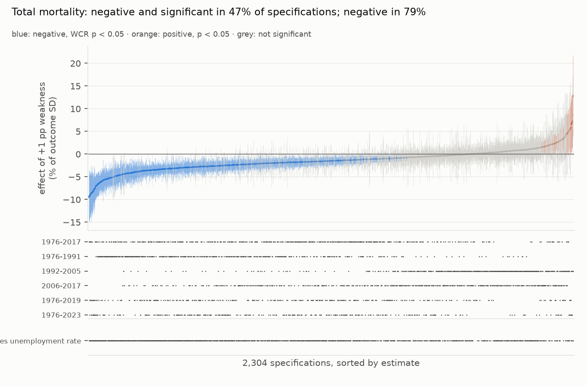
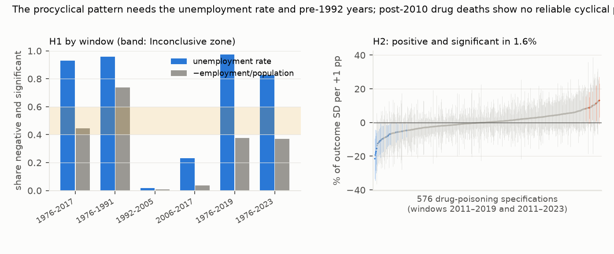

Verdict: H1 Inconclusive; H2 Refuted.
- H1 (the procyclical coefficient is negative and significant in fewer than half of defensible specifications):
Inconclusive.
- 47.4% of the 2,304 total-mortality specifications are negative and significant under the wild cluster restricted bootstrap, inside the preregistered 40–60% band. 79% are negative; 1.7% are positive and significant.
- A joint test rules out chance. Under the null, the median share significant is 1.8% (95th percentile 10%), against 49% observed (p < 0.002).
- "Inconclusive" averages two opposite answers. The three long windows (1,008 specifications, which share 42 of their 44–48 years) give 66% negative and significant, in the Refuted band. The three sub-periods (1,296) give 33%, in the Supported band. The plan's window list fixes that weighting.
- The answer depends on two choices.
- The window. In 1976–1991, 85% of specifications are negative and significant. In 1992–2005 it is 1.4% (about 40% negative), and in 2006–2017, 13%. The full-period windows owe their significance largely to the pre-1992 years.
- The measure. With the unemployment rate, the long windows are 83–97% negative and significant. With the employment-to-population ratio, 37–44%.
- Much of that gap is an artefact of the ratio's denominator, which ages along with the population (post hoc). With age adjustment or demographic controls, the ratio gives 53–66% in the long windows; with neither, 11–18%.
- Together they account for most of what the choices explain. The main effects of all eight choices explain 43% of the variation across specifications; dropping the window loses 28 points and dropping the measure 11. Weighting, lags, trends, outcome, estimator and controls lose 0.1–2 points each.
- The canonical Ruhm specification reproduces the classic result. Log crude mortality falls 0.52% per point of unemployment for 1976–2017 (95% CI −0.92% to −0.13%; bootstrap p = 0.018). The sub-periods split: +0.21% in 1992–2005 (not significant) and −0.57% in 2006–2017.
- H2 (post-2010 drug-poisoning deaths are significantly countercyclical in most specifications): Refuted.
- Only 1.6% of 576 specifications are positive and significant; 3.5% are negative and significant.
- Half the estimates are positive, two thirds in 2011–2019 and one third in 2011–2023.
- For 1999–2010, 79% are positive but only 8% significant.
In plain terms
For decades economists have reported a surprising pattern: in the United States, deaths fall during recessions and rise in booms. Proposed reasons include fewer road crashes, less pollution, and better-staffed care homes when jobs are scarce. Later work suggested the pattern had faded, and that deaths from drug overdoses might move the other way.
We rebuilt the state-by-year data from 1976 to 2023. Instead of one analysis, we ran every combination of a fixed set of reasonable choices, 2,304 analyses in all. We then counted how many find the classic pattern.
About half do, which our preregistered rule calls inconclusive. But the split is not random. The pattern is strong in 1976–1991 and largely absent in 1992–2005. It is also stronger when the economy is measured by the unemployment rate than by the share of people in work, partly because that share also falls as a state's population ages. Overdose deaths after 2010 did not reliably rise with unemployment in almost any analysis.
So "deaths fall in recessions" holds for the late 1970s and 1980s, and mostly with one way of measuring the economy. It is not a stable law.
What was asked
The lead (health-econ-procyclical-mortality-multiverse) asked whether the canonical procyclical result survives a
systematic specification curve. Prior work:
- Ruhm (2000) established the pattern for 1972–1991, and Ruhm (2015, Journal of Health Economics) showed it
weakening, with drug poisoning countercyclical.
- Studies elsewhere, such as Brüning and Thuilliez (2019) for France, are mixed.
No specification curve with joint inference over this panel was found.
How it was done
- Deaths.
- 1976–1998: NBER Multiple Cause of Death microdata (1.9–2.3 million records a year), counted by state of residence, with foreign residents excluded.
- 1999–2017: CDC "Leading Causes of Death", all causes.
- 2018–2022: CDC weekly counts by state of occurrence, apportioned to calendar years and calibrated to residence on 2014–2017.
- 2023: CDC's quarterly provisional all-cause rate (D1).
- Validation. NBER and CDC counts for 1999–2004 agree exactly, and age-adjusted rates by a median 0.004%. The calibrated weekly series varies by a median 0.16% around its calibration.
- Drug-poisoning deaths: NCHS 1999–2018, then VSRR provisional counts for 2019–2023, calibrated to NCHS on 2015–2018 (D1).
- Economic weakness: BLS LAUS annual unemployment rate, or −100 × LAUS employment / population aged 15+. Populations and demographic shares come from SEER.
- The multiverse. It is fully crossed:
| dimension | options |
|---|---|
| outcome | log crude rate, log age-adjusted rate, crude rate |
| measure | unemployment rate, −employment/population |
| weights | population, none |
| state trends | none, linear, quadratic |
| lags | contemporaneous, cumulative with one lag |
| window | six |
| estimator | TWFE, first differences, division × year effects |
| controls | none, shares under 5 / 65+ / 85+ / Black |
The age-adjusted rate is undefined after 2017, which removes 288 combinations and leaves 2,304. The plan misstated the total (D2). - Inference. A wild cluster restricted bootstrap by state (Rademacher, 9,999 draws) is computed in closed form. It was checked against a brute-force bootstrap on synthetic panels, matching exactly, and has 5.0% size under the null. - The joint test uses 500 null datasets with shared draws across specifications.
Results
The H1 specification curve (results/figures/F1_spec_curve_h1.png)


By window and measure (results/figures/F2_windows_h2.png, left)


| window | specifications | negative and significant: unemployment rate | −employment/population | negative (either measure) |
|---|---|---|---|---|
| 1976–1991 | 432 | 96% | 74% | 97% |
| 1976–2017 | 432 | 93% | 44% | 93% |
| 1976–2019 | 288 | 97% | 38% | 90% |
| 1976–2023 | 288 | 83% | 37% | 92% |
| 1992–2005 | 432 | 2% | 1% | 42% |
| 2006–2017 | 432 | 23% | 4% | 67% |
The canonical specification by window
Log crude rate, unemployment rate, population weights, state and year effects, demographic controls:
| window | effect of +1 point unemployment | 95% CI (CR1) | WCR p |
|---|---|---|---|
| 1976–2017 | −0.52% | −0.92% to −0.13% | 0.018 |
| 1976–1991 | −0.41% | −0.53% to −0.29% | < 0.001 |
| 1992–2005 | +0.21% | −0.18% to +0.60% | 0.30 |
| 2006–2017 | −0.57% | −0.81% to −0.33% | < 0.001 |
| 1976–2019 | −0.50% | −0.90% to −0.10% | 0.025 |
| 1976–2023 | −0.64% | −1.05% to −0.24% | 0.003 |
The canonical model finds a significant 2006–2017 effect that only 13% of that window's specifications share. In
that window the canonical choices (no trends, the unemployment rate, demographic controls) are among the most
favourable. Part of the low sub-period shares is mechanical: in 2006–2017, 28% of specifications without state
trends are negative and significant, 12% with linear trends and none with quadratic trends. 228 specifications
estimate more than 0.3 parameters per observation (post hoc, results/tables/posthoc_review.json).
Post hoc (after review): the employment-to-population ratio and the population's age. Long windows, share negative and significant:
| measure | controls | crude rate | log age-adjusted | log crude |
|---|---|---|---|---|
| −employment/population | none | 18% | 50% | 11% |
| −employment/population | demographic shares | 66% | 53% | 59% |
| unemployment rate | none | 93% | 89% | 91% |
| unemployment rate | demographic shares | 91% | 94% | 91% |
The ratio divides employment by the whole population aged 15+, which includes retirees. A state that ages faster sees the ratio fall and crude mortality rise with no cyclical content. That pushes the coefficient towards a positive value wherever neither age adjustment nor demographic controls absorb ageing.
Drug poisoning (H2; F2, right)
| 2011–2019 | 2011–2023 | 1999–2010 (contrast) | |
|---|---|---|---|
| positive and significant | 3.1% | 0.0% | 8.3% |
| positive | 67% | 35% | 79% |
| negative and significant | 1.4% | 5.6% | 0.0% |
| canonical-type estimate, % per point (95% CI) | +0.04 (−4.2 to +4.3) | +1.9 (−2.3 to +6.1) | +5.6 (+2.4 to +8.8) |
The canonical-type rows use the log drug rate with the canonical H1 choices (post hoc). The 20 negative and significant H2 specifications are all unweighted, and 16 of them use the employment-to-population ratio, so they are a corner of the multiverse, not a countervailing pattern.
What this does and does not show
- The procyclical pattern is real but period- and measure-bound.
- It is overwhelming in 1976–1991, and in long windows that include those years, when weakness is measured by unemployment.
- It mostly disappears for 1992–2005, and is weak and fragile for 2006–2017.
- The employment-to-population ratio gives it less support. Much of the difference comes from ageing in the ratio's denominator; with age adjustment or demographic controls the ratio supports the pattern in 53–66% of long-window specifications.
- These two choices, not estimator or weighting details, decide the answer.
- H2's countercyclical overdose story finds no support in this panel. After 2010, overdose deaths rose almost
everywhere for reasons largely unrelated to the business cycle, and year effects absorb that.
- The remaining state variation is not detectably related to unemployment. But the intervals, roughly ±4% per point, include both zero and the 1999–2010 estimate (+5.6%), so a modest countercyclical effect cannot be excluded.
- Not shown:
- Causal identification beyond the standard design. This is the established state-year fixed-effects design, with no new source of exogenous variation.
- Heterogeneity-robust continuous-treatment estimators, which were not in the multiverse.
- Cause-specific mechanisms, apart from drug poisoning.
- Data quality after 2017. 2018–2023 rests on calibrated occurrence-based counts and a provisional 2023 rate.
Windows ending in 2017 avoid this and give the same picture.
- DC's occurrence-to-residence ratio drifts by 2.2% a year, so its calibrated 2018–2022 counts may be off by up to about 10%.
- Without the VSRR drug-count calibration, H2's share is 2.3% rather than 1.6% (the review's sensitivity check).
- The employment-to-population measure uses all residents aged 15+, not BLS's civilian non-institutional population aged 16+. That builds in the ageing confound above.
Process and deviations
- Preregistration:
plan.md. - Deviations (
deviations.md):- D1 (before estimation): 2023 from the CDC quarterly rate, because the weekly file ends in September 2023; VSRR drug counts calibrated to NCHS;
- D2: the plan's specification count was arithmetically wrong, with no choice changed; and the pyfixest cross-check;
- D3 (after review): an unstated drop of 1977 in first-difference specifications with the cumulative lag in 1976 windows (240 specifications; LAUS starts in 1976); the post hoc summaries above; documentation fixes.
- Independent review: Fable, "publish with edits" (
review/review.md). The edits were made, and the reviewer's confirmation pass found them correct ("publish").
Reproducing it
- Run
code/download.sh(raw files), fetch the FRED LAUS series (LAUST{fips}0000000000003Aand…005A), and fetch489q-934xfrom data.cdc.gov. code/build.py nber, thencode/build.py panel.code/multiverse.py test, thencode/multiverse.py run.code/figures.py.